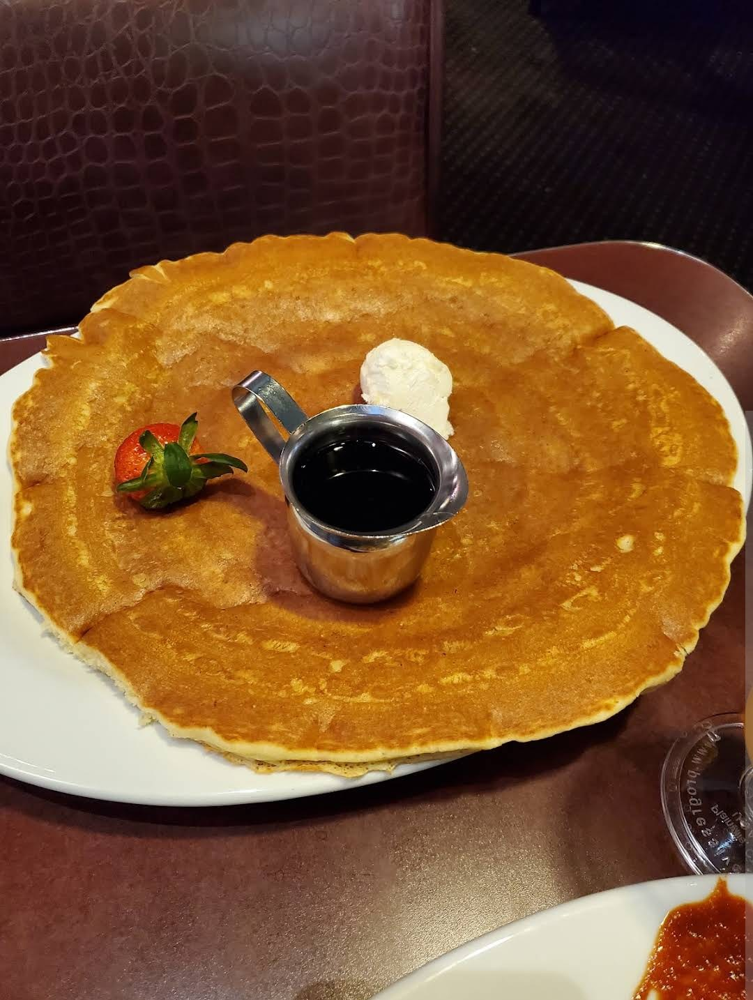

Hash House A Go Go (Plaza)
Twisted Farm Food · Downtown at the Plaza
1 S Main St, Las Vegas, NV 89101
Rating: 5/5
Great food and great service. I ordered the Fried chicken egg Benedict and a pancake to share and it was great. The waitress was very attentive and friendly. Would definitely recommend and come back.
Fried Chicken Eggs Benedict
Plain Pancake
About the place
Hash House A Go Go was founded in July 2000 in San Diego's Hillcrest neighborhood by chef Andy Beardslee and Johnny Rivera, built around what they call “twisted farm food”: Midwestern comfort cooking in oversized portions with over-the-top presentation, like dishes skewered with rosemary sprigs and knives. The chain came to Las Vegas in 2005, and this downtown location opened in 2011 right next to the front entrance of the Plaza Hotel & Casino at Main and Fremont Street, with seating for about 185. It serves breakfast, lunch and dinner. Signatures include fried chicken Benedicts and waffles, sage fried chicken, and plate-sized pancakes. A Las Vegas Hash House was featured on Travel Channel's Man v. Food.
What other diners say: Reviewers on Yelp and Tripadvisor regularly mention the huge portions (many share plates), the fried chicken dishes and the giant pancakes, and many say servers are friendly and quick. Common complaints are long waits at peak brunch hours, prices on the higher side, and some dishes coming out rich or heavy.
Sources: Hash House A Go Go's website, the Plaza Hotel & Casino, the Las Vegas Review-Journal, San Diego Magazine, Wikipedia, Yelp and Tripadvisor. Summaries are paraphrased, not quotes.
About the place
Mexican restaurant on S Suncoast Blvd in Homosassa, with a full bar. The menu covers Mexican-American favorites like fajitas, burritos, chimichangas, quesadillas and enchiladas, plus seafood dishes such as chipotle shrimp. Guacamole is made at the table.
What other diners say: Reviewers on Google and Yelp often praise the fresh, hot food, friendly staff, fast service and welcoming atmosphere. Some mention long waits at busy times and occasional inconsistency.
Sources: Apple Maps (Yelp), Restaurantji and Foodeist (Google reviews). Summaries are paraphrased, not quotes.



Comments
Sign in with GitHub to leave a comment or reaction.